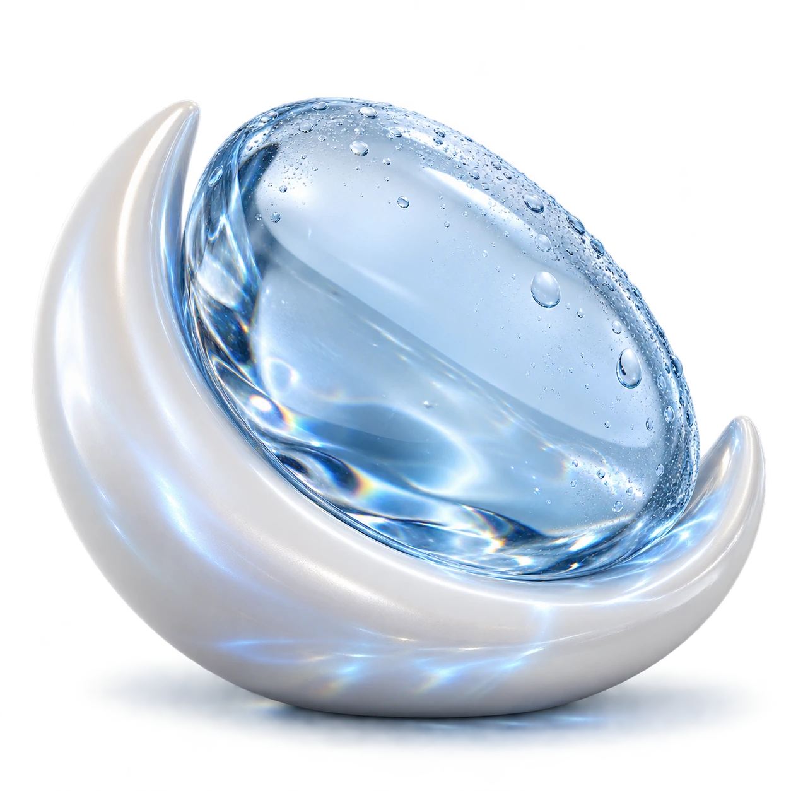
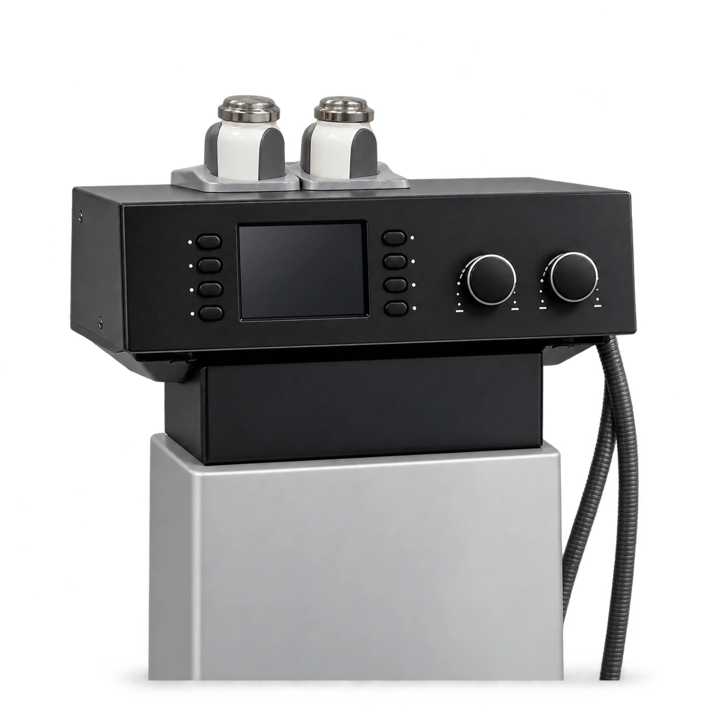
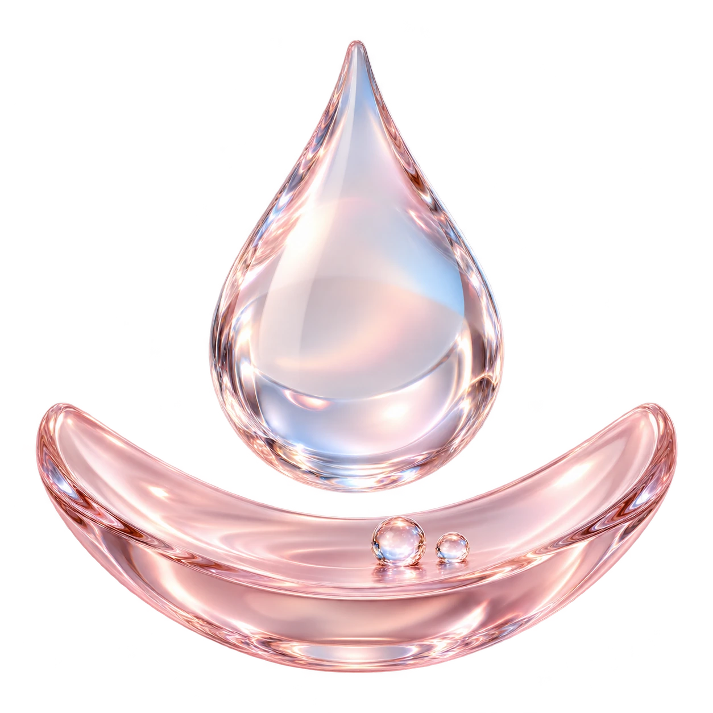
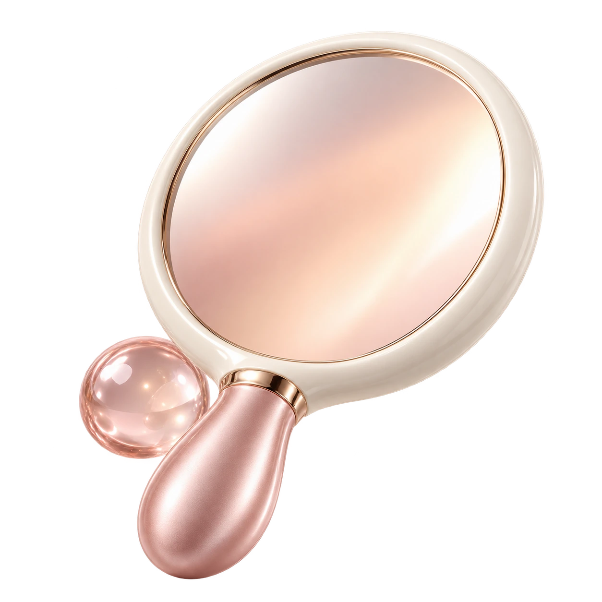

달아오른 피부의 열감
레이저 등 시술 뒤 남은 열감이 신경 쓰일 때 쿨링 적용 여부를 상담할 수 있습니다. 냉각은 열감과 불편감을 줄이는 보조 관리로 활용되며, 화상이나 지속되는 통증은 진료가 먼저입니다.
A MOMENT
TO COOL.
피부의 열감부터 관리 후 일상까지.
원리와 차이를 알고 내 피부에 맞게 선택하세요.

COOL &
CALM.
크라이오 진정관리는 냉각 헤드를 피부에 접촉시켜 쿨링을 전달하는 피부관리입니다. 피부가 달아오른 느낌과 일시적인 불편감을 살피며, 피부 상태에 따라 시술 후 관리에 활용합니다.
핵심은 무조건 차갑게 만드는 것이 아니라 부위와 피부 반응에 맞게 냉각을 조절하는 것입니다. 관리 중에는 피부색 변화, 따가움과 통증을 함께 확인합니다.
적용 방식과 체감은 장비 설정, 관리 부위, 함께 받은 시술에 따라 달라집니다.
지금의 불편감과 관리 목적을 구분하면
상담에서 필요한 내용을 더 정확히 나눌 수 있습니다.

레이저 등 시술 뒤 남은 열감이 신경 쓰일 때 쿨링 적용 여부를 상담할 수 있습니다. 냉각은 열감과 불편감을 줄이는 보조 관리로 활용되며, 화상이나 지속되는 통증은 진료가 먼저입니다.

시원한 느낌과 수분 관리는 구분해서 살펴야 합니다. 피부가 당기거나 건조하다면 현재 사용하는 제품과 함께, 관리 후 어떤 보습이 필요한지 확인합니다.

붉어짐과 예민함은 원인과 정도가 다릅니다. 최근 받은 시술, 피부가 불편해진 시점, 증상이 지속되는 시간을 살펴 관리 시점을 정합니다.
같은 ‘크라이오’라는 말이 쓰이더라도
피부를 관리하는 방법은 구분해서 확인하세요.
피부 표면에 쿨링을 적용해 열감과 불편감을 살피는 관리입니다. 이 페이지에서는 피부 진정을 위한 관리 내용을 안내합니다.
일부 사마귀 등 피부 병변을 얼려 치료하는 의료적 처치입니다. 적용 대상과 회복 과정이 달라 별도의 진단과 설명이 필요합니다.
전신을 극저온에 노출하는 전신 크라이오테라피와도 구분됩니다. 시술명만 보고 동일한 효과나 회복 과정을 예상하지 마세요.
최근 시술과 현재 피부를 확인하고,
관리 중 반응과 이후 생활까지 함께 살핍니다.
YOUR SKIN.
현재 느끼는 열감·붉음·당김과 최근 시술, 사용 중인 제품을 확인합니다. 차가운 자극에 불편했던 경험이 있다면 미리 알려주세요. 피부 상태를 확인해 적용 부위와 관리 가능 여부를 정합니다.
COOL & CALM.
쿨링을 적용하면서 피부색과 체감, 불편감 여부를 살핍니다. 시원한 느낌을 넘어 통증이나 심한 따가움이 있으면 바로 알려주세요. 피부 반응에 따라 적용 방식과 시간을 조절합니다.
DAILY CARE.
관리 후 피부 상태를 다시 확인하고 필요한 보습과 자외선 차단, 세안·화장 시 주의할 점을 안내합니다. 다른 시술을 함께 받았다면 해당 시술의 주의사항을 우선합니다. 다음 관리 일정은 피부 경과에 맞춰 상담합니다.
좋은 관리 계획은
지금 필요한 내용을 정확히 나누는 데서 시작합니다.
어떤 시술을 언제 받았는지, 이후 어떤 변화가 있었는지 알려주세요. 같은 날 관리 가능한지와 적용 순서는 함께 받은 시술을 기준으로 정합니다. 붉음이 남아 있다는 이유만으로 쿨링이 항상 필요한 것은 아닙니다.
일시적으로 달아오른 상태와 지속되는 피부 문제는 구분해야 합니다. 반복되는 홍조, 염증, 가려움은 원인 확인이 필요합니다. 쿨링만으로 모든 원인을 해결할 수 있다고 기대하기보다 증상과 생활 변화를 함께 상담하세요.
열감 관리가 우선인지, 보습이나 다른 피부 고민을 함께 살펴야 하는지 정리해 보세요. 최근 관리에 대한 반응과 원하는 일정을 알려주면 필요한 관리와 시점을 상담하는 데 도움이 됩니다.
CARE GUIDE.
추위에 두드러기·붓기가 생겼던 경험이 있다면 사전에 말씀해 주세요. 한랭 두드러기는 차가운 자극 뒤 가려운 발진이나 붓기가 나타나는 반응으로, 단순히 추위를 잘 타는 것과 다릅니다.
감각이 둔한 부위, 혈액순환 문제나 레이노 현상, 피부 상처와 염증, 임신 여부도 상담 시 알려주세요. 복용 중인 약과 사용하는 제품, 최근 시술 내용을 함께 전달하면 적용 여부를 판단하는 데 도움이 됩니다.
단독 피부관리 후에는 가벼운 세안과 화장이 가능할 수 있습니다. 다만 함께 받은 시술과 피부 반응에 따라 달라지므로, 당일 안내를 우선하고 강하게 문지르는 행동은 줄여주세요.
관리 후 당분간 사우나·찜질방·격한 운동·음주·흡연은 피해주세요. 산 성분, 레티놀, 알코올 등 자극을 줄 수 있는 제품의 사용 시점도 안내를 따릅니다.
보습제와 자외선 차단제를 사용해 일상 관리를 이어가세요. 각질이나 작은 딱지가 생겼다면 손으로 떼지 않습니다. 더 시원하게 하려고 얼음을 피부에 오래 대는 행동도 피해주세요.
일시적인 붉음·열감·따가움·건조함이 생길 수 있습니다. 통증이나 붓기가 심해지거나 물집, 뚜렷한 피부색 변화, 지속되는 감각 이상이 있다면 병원에 연락해 확인받으세요.
FAQ.
효과·통증·주기·다른 관리와의 차이까지.
냉각 헤드를 이용해 피부 표면에 쿨링을 적용하는 관리입니다. 피부가 달아오른 느낌과 일시적인 불편감을 살피는 데 활용하며, 적용 부위와 방식은 현재 피부 상태와 최근 시술을 확인한 뒤 정합니다.
쿨링을 통한 열감과 불편감의 완화를 기대할 수 있으나 체감에는 차이가 있습니다. 지속되는 홍조·염증·통증의 원인 치료를 대신하지 않으며, 보습이나 다른 피부 고민은 별도로 살펴야 합니다.
목적과 적용 방식이 다릅니다. 이 페이지의 크라이오는 피부 쿨링 관리이며, 사마귀 등의 병변에 액체질소를 사용하는 냉동치료는 병변을 얼려 치료하는 별도의 의료적 처치입니다.
함께 받은 시술과 피부 손상 정도, 남아 있는 열감과 불편감에 따라 달라집니다. 시술명과 받은 날짜를 알려주고 당일 병행 여부와 적용 순서를 상담하세요. 모든 시술 뒤에 반드시 추가하는 관리는 아닙니다.
차가운 느낌과 불편감은 개인에 따라 다릅니다. 차가운 자극이 아프거나 심하게 따갑다면 참고 계속 받지 말고 바로 알려주세요. 관리 중 피부 반응을 확인하며 조절합니다.
관리 부위, 피부 반응, 다른 시술과의 병행 여부에 따라 정합니다. 모든 사람에게 같은 시간이나 횟수를 적용하지 않으므로, 원하는 일정과 최근 시술 내용을 상담할 때 함께 알려주세요.
민감한 피부라도 원인과 상태가 다릅니다. 한랭 두드러기, 차가운 자극 후 붓기, 감각 저하, 혈액순환 문제, 상처나 염증이 있다면 미리 알리고 관리 가능 여부부터 확인해야 합니다.
단독 피부관리 후 가벼운 세안과 화장이 가능할 수 있지만 피부 반응과 병행 시술에 따라 달라집니다. 당일 안내를 우선하고, 강한 마찰이나 자극적인 제품 사용은 줄여주세요.
붉음·열감·건조함이 일시적으로 나타날 수 있습니다. 증상이 계속 심해지거나 통증, 물집, 뚜렷한 피부색 변화, 감각 이상이 생기면 병원에 연락해 확인받으세요. 차가운 자극 뒤 호흡곤란이나 전신 반응이 생기면 즉시 응급 진료가 필요합니다.
크라이오는 피부 표면에 냉각을 적용하고, LDM은 초음파를 활용합니다. 이름이나 시원한 체감만으로 같은 관리라고 보기는 어렵습니다. 피부 고민과 최근 시술에 따라 필요한 관리와 순서를 상담합니다.
관리 방식과 구성이 달라 함께 비교할 수 있습니다. 뷰티블라썸 울디엠 산소리프팅에는 초음파 관리와 산소이온 LED 돔 등의 과정이 안내되어 있습니다. 병행 필요성과 적용 시점은 피부 상태를 기준으로 정합니다.
페이지의 상담 예약에서 네이버 예약·카카오톡·전화 안내를 확인할 수 있습니다. 뷰티블라썸의원은 서울 마포구 양화로 66 메디원메디컬센터 6층·8층에 있으며 접수는 6층입니다. 최근 시술과 불편한 증상을 함께 알려주세요.
홍대·합정 크라이오 상담,
지금의 피부부터 함께 살펴볼까요?
나에게 맞는 이벤트를 펼쳐보세요.
Beauty, with care.
피부 상태와 원하는 변화를 세심하게 살피고,
정품·정량과 충분한 설명을 진료의 기본으로 생각합니다.

피부 상태와 일상, 원하는 변화를
함께 살펴 나에게 맞는 진료 계획을 세웁니다.

정품 사용과 정량 원칙을
진료의 기본으로 생각합니다.

개개인의 자연스러운 아름다움을 존중하며,
시술 과정과 관리 방법을 충분히 설명합니다.
Find us.
평일 10:00–20:00
주말·대체공휴일 10:00–16:30
점심시간 없이 진료 · 공휴일 진료는 문의
평일 10:00–20:00
주말·대체공휴일 10:00–16:30
점심시간 없이 진료 · 공휴일 진료는 문의